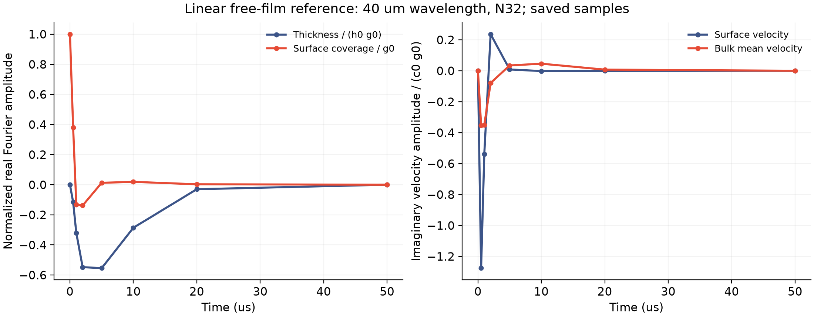
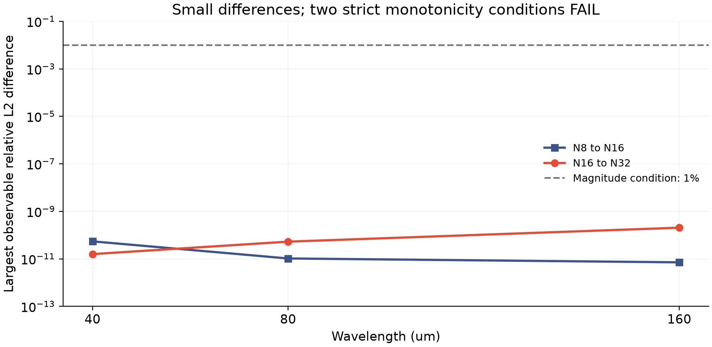

线性自由膜参照 · 2026-11-13
让表活决定界面应力，
让膜厚与水流共同演化。
上一版参照由外部规定界面应力。这次引入原模型的表活弹性，小扰动下同时求解内部速度、膜厚和表活浓度变化。
这次与固定液层有什么不同？
界面应力不再是给定曲线
按原模型的不溶 Langmuir 表活假设，浓度变化引起表面张力变化，进而产生切向应力。没有拟合交换速率或振荡速度。
自由界面的膜厚也会变化
内部流动满足不可压缩条件，液量通量推动膜厚变化；界面速度输运表活，曲率与表面张力给出法向恢复作用。
参照包含完整线性惯性和黏性，沿膜厚用 8、16、32 阶偶 Legendre 基表示。采用原冻结算例的密度、黏度及表活状态；初始膜厚 6 微米，表活相对扰动 10⁻⁶。只求平直基态附近、对称界面的单一傅里叶模态，未解析真实弯月面与浴液。
内部平均速度与界面速度一起计算

这个参照用于检查变量之间的物理联系，不是原生粒子模拟的重放，也没有用于修正其动量或能量账本。经典自由膜线性理论和 Galerkin 方法本身不是本项目的新贡献。
通过与未通过的部分分开看
六组无黏清洁膜毛细波频率与独立势流解析关系一致；零波数剪切衰减率对照通过。九组耦合参照的能量结构、非增能量、切向及法向应力核对通过。空间阶数比较的幅值条件均小于 1%，但 80、160 微米波长没有满足严格递减条件。

| 波长 | 16→32 阶最大差异 | 32 阶切向应力残差 | 32 阶法向应力残差 | 原阶数比较条件 |
|---|---|---|---|---|
| 40 μm | 1.583e-11 | 3.373e-12 | 9.821e-09 | 通过 |
| 80 μm | 5.295e-11 | 3.373e-12 | 4.295e-08 | 未通过：不严格递减 |
| 160 μm | 2.049e-10 | 3.373e-12 | 1.577e-07 | 未通过：不严格递减 |
应力残差使用各项幅度之和归一化，按事前计划排除初始应力不相容的 t=0 时刻。小幅结果差异的具体误差来源尚未逐项分离，因此不据此宣布渐近收敛。
导出错误也完整保留
原演化完成后，JSON 导出遇到 NumPy 布尔值序列化错误。九组压缩模态状态全部保留，并只读恢复验收和曲线；恢复前后文件哈希一致，没有重跑演化。随后仅修复 JSON 标量导出，原始代码、失败记录与补丁一并保留。
这些恢复操作没有改变两个失败标记、任何物理方程、采样或门槛。当前展示的数值结果来自原始保存状态。
接下来接回哪里？
先完成正在运行的 5 微米原生时间／空间对照，再将边界条件一致的局部参照用于原 C1 的通量、牵引力和界面功检验。当前平直线性参照还缺少曲面边缘、开放浴液、非线性形变及与运动粒子膜的实际连接。
原 2% 时间、10% 空间与 10／50／200 微秒原生检查、交换系数、薄膜元厚度比、整体条纹和保留工况实验仍全部开放。该参照的 200 微秒输出不算原生检查完成。C2 未引入交换动力学。
相关背景：Lalli 与 Giusti（2024）及van Nierop、Scheid 与 Stone（2008）的自由界面应力条件。当前线性弱式与毛细波控制关系在计划中独立推导，没有采用文中的拟合参数。